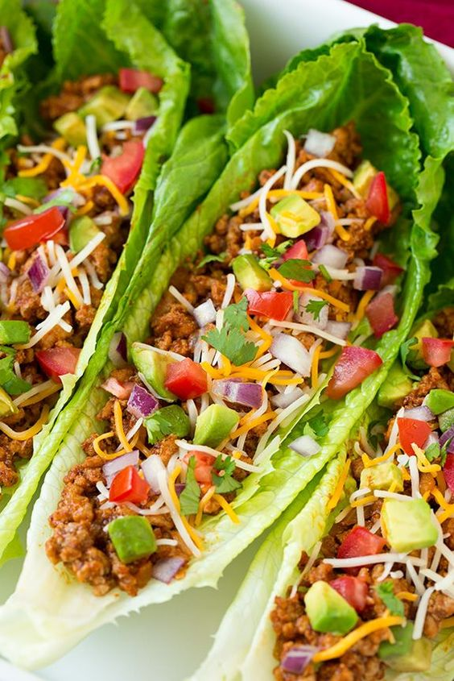
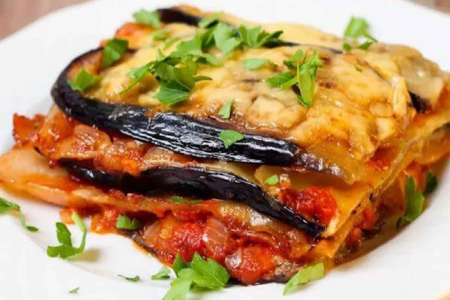

Sugestões de café da manhã/tarde
-
Smoothie Bowl:

Misture no liquidificador frutas congeladas como banana, morango e um pouco de espinafre com leite sem lactose. Decore com granola sem glúten, sementes ou frutas de sua preferência.
-
Pão Integral com Abacate:
Pão integral ou sem glúten,amasse um abacate maduro com sal,pimenta e limão a gosto,coloque em cima do pão,e finalize com sementes de gergilim(opcional)
-
Trufas de Chocolate e Coco

Ingredientes: 1 xícara de tâmaras sem caroço 1/2 xícara de nozes ou amêndoas 1/4 xícara de cacau em pó 1/4 xícara de coco ralado 1 colher de sopa de óleo de coco derretido Instruções: Bata as tâmaras, nozes e cacau no processador até formar uma massa. Modele em bolinhas e passe no coco ralado. Coloque na geladeira por 30 minutos antes de servir.
-
Chips de Batata Doce

Ingredientes: 1 batata-doce Azeite Sal e pimenta a gosto Instruções: Preaqueça o forno a 200°C. Corte a batata-doce em fatias finas, misture com azeite, sal e pimenta. Asse por 20-30 minutos, virando na metade do tempo, até ficarem crocantes.
-
Bowl de Grão-de-Bico e Quinoa
Ingredientes: 1 xícara de quinoa cozida 1 xícara de grão-de-bico cozido 1/2 abacate fatiado 1/2 xícara de espinafre 1/4 de cebola roxa picada Suco de limão, azeite, sal e pimenta a gosto Instruções: Misture a quinoa e o grão-de-bico em uma tigela. Adicione o espinafre, a cebola e o abacate. Tempere com suco de limão, azeite, sal e pimenta.
-
Tacos de Feijão Preto

Ingredientes: Tortilhas de milho 1 xícara de feijão preto cozido 1/2 cebola picada 1/2 abacate fatiado Tomate picado Coentro fresco Limão, sal e pimenta a gosto Instruções: Aqueça as tortilhas. Misture o feijão preto com a cebola, tomate e coentro. Tempere com limão, sal e pimenta. Monte os tacos com a mistura de feijão e abacate.
-
Lasanha de Berinjela

Ingredientes: 2 berinjelas cortadas em fatias 2 xícaras de molho de tomate 1 xícara de espinafre fresco 1 xícara de queijo vegano (ou tofu amassado) Ervas (orégano, manjericão) a gosto Instruções: Preaqueça o forno a 180°C. Em uma forma, faça camadas com as fatias de berinjela, molho de tomate, espinafre e queijo vegano. Repita as camadas até acabar os ingredientes e finalize com molho de tomate. Asse por 30-40 minutos.
-
Bowl de Quinoa e Legumes Assados

Ingredientes: 1 xícara de quinoa cozida Legumes variados (abóbora, cenoura, brócolis) cortados Azeite, sal e pimenta Sementes de girassol ou abóbora (opcional) Instruções: Preaqueça o forno a 200°C. Misture os legumes com azeite, sal e pimenta e asse por 20-25 minutos. Monte o bowl com quinoa e legumes assados. Finalize com sementes, se desejar.